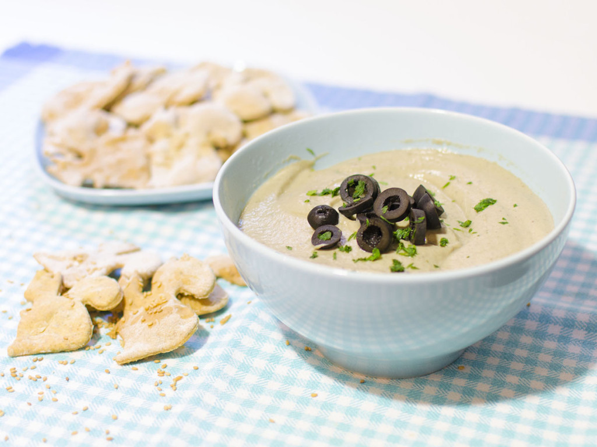

Ingrediente: sesamo (1 receta)
Crema de berenjenas con galletas de sésamo
Esta crema de berenjenas es muy ligera, fresquita y cremosa, resulta perfecta como aperitivo o entrante especialmente en verano, y la puedes tener preparada con antelación. Puede acompañarse con tostaditas, picos de pan, o si tenéis algo de tiempo podéis animaros a preparar las galletas de sésamo que os propongo, son muy sencillas de hacer y están riquísimas.
[Leer receta completa]
